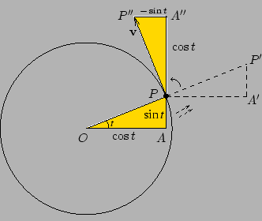
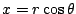
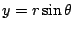
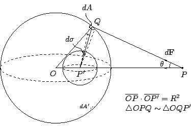

八、圓錐截線的故事
（第 8 頁）
項武義
．作者任教於香港科技大學數學系
•註釋
•對外搜尋關鍵字
|
八、圓錐截線的故事
（第 8 頁）
項武義
|
．作者任教於香港科技大學數學系 •註釋 •對外搜尋關鍵字 |
Kepler 三定律清楚地描述了行星運行的簡單模式。一個自然的問題就是：「為什麼行星會以太陽為其一焦點的橢圓軌道運行？」牛頓對這個問題給了一個直接的答案，即行星與太陽之間存在滿足平方反比定律 註2 (inverse square law) 的引力。而且這種引力同樣地存在于任何兩個物體之間，不論是火星與太陽或是蘋果與地球，都是同一種引力；這就是牛頓著名的萬有引力定律。現在讓我們以現今的符號體系來重新看看牛頓這個對後世科學發展有著深遠影響的工作。首先我們需要對橢圓的幾何性質有一定的了解。 （一）橢圓面積公式：橢圓面積 設橢圓的長、短徑分別為 2a, 2b 。現構造兩個圓，半徑分別為 a, b，並把橢圓夾于兩者之間，如 [圖 8-21] 所示。
[ 圖 8-21 ]
考慮圖中那條過 P(x,y) 的窄條面積。由于
,
，在橢圓內的窄條面積和整條窄條面積的比率約為：
這是一個與 P(x,y) 位置無關的常數。當把所有這種窄條的面積加起來時，便得 （二） 橢圓的極坐標方程式
[ 圖 8-22 ]
如 [圖 8-22] 所示，橢圓上一點 P 有 (x,y) 和 來達成。把上面轉換方法代入熟悉的橢圓坐標方程式 ，即得 因此 （ 是負值，它會以 P' 來描繪出橢圓）。為了方便以後的計算，我們取其顛倒式為橢圓極坐標方程式： （三）第二定律的數理分析
以太陽（焦點）為中心，極坐標
[ 圖 8-23 ]
運用第二定律，這個面積的改變速率為常數，即：
注意在上面我們只是用了微積分的記號和想法，並沒有用到深奧技巧。
[註]：從物理學觀點來看，第二定律是有物理意義的。如 [圖 8-24] 所示， 是動點 P 的位置向量，
[ 圖 8-24 ]
是平行四邊形 OPQR
的面積。但從物理學觀點來看，
是物體相對于 O 點的角動量，因為是平面（橢圓）運動，此向量是恆垂直于平面的，所以由第二定律亦可得知角動量在行星運行中是不變的（這也是人類理性文明中首次接觸到角動量守恆律）。再者，
所以引力 的作用方向是和 反向平行。 （四）溫習： 和 的微分
從圓的簡單幾何性質和簡單的物理觀念，我們很容易便得出 和
的微分。其簡單的推導如下：

[ 圖 8-25 ]
如 [圖 8-25] 所示，動點 P
在單位圓上作單位速率運動。用熟知的圓的參數表示方法，P 的坐標可寫成
。另一方面，從幾何觀點得知速度向量應是垂直于半徑，所以把圖中的
但從物理學觀點來說，速度向量 因此即得下面熟悉的公式： （五）向心加速的公式：
上述公式只需對坐標
,
 直接微分便可得出。計算過程大致如下：
因此 由（四）知引力的方向是平行于位置方向 ，所以 應該是 0，並只餘下向心加速 。 （六）平方反比定律的証明（第一、第二定律的綜合分析）
要証明引力是滿足平方反比定律，我們只需驗証
是否為一常數。先對橢圓的極坐標方程式微分：
在上式用了（三）
。同樣地在下面的計算中，我們盡可能分離出 這一項，然後換成常數
。
因此 。 （七）由行星引力到萬有引力 當牛頓想再進一步把行星與太陽之間的引力推廣到任何物體與物體之間的引力，他遇到一個困難，使這位科學史上的巨人困擾了數年。由于行星與太陽之間的距離很大，所以在計算中可把行星和太陽當作兩個質點，即可以假設質點集中了整個球體的質量；但當推廣至任何物體與物體之間的情形，如蘋果與地球，則便不可隨便地把地球當作為一個質點了。牛頓遇到的困難，就是他不能証明的確可以把地球當作為質點的猜想。即使在 1684 年他的好友 Halley（哈雷）力邀牛頓發表已得的結果，他仍不願意註3 發表。到了 1686 年，他終于成功地証明了上述猜想，即一個密度只隨著到球心距離而變化的球體，在吸引球外一個質點時，所作用的力就像假設全部質量都集中在球心一樣。在這年他寫信給 Halley 表示同意寫出他的工作，這就是在次年 (1687) 出版的科學巨著《自然哲學 註4 的數學原理》(Philosophiae Naturalis Principia Mathematica) 。 牛頓在書中所給的証明是很繁複的。在這裡，我們給出另一個証明，它巧妙地運用了球的幾何特性而大大簡化了計算過程。 對于一個球面的最自然、最對稱的點當然就是球心。但是在研討球面與球外一點的互相作用時，從幾何觀點來看，最自然、最對稱的點就不再是球心，而是 [圖 8-26] 的 P' 點（這是 P 相對于球面的反射對稱點）。

[ 圖 8-26 ]
設球體其中一層薄殼的半徑為 R，面密度為 ρ，薄殼質量為
，球外質點 P 的質量為 m 。考慮在薄殼上的一小片面積 dA 作用于 P 的引力 在直線段
[ 圖 8-27 ]
如 [圖 8-27] 所示，dA 和 因此，整個薄殼作用于 P 的力就是 因此這層薄殼作用于 P 的力就相等于將全部質量 M 集中于 O 而作用于 P 的力。再將所有薄殼作用的力加起來，便得所需之公式。 這也就是由 Kepler 行星運行定律的數理分析自然而然地推導出牛頓萬有引力定律的一個簡樸詳盡的敘述。它就是牛頓的科學巨著 Philosophiae Naturalis Principia Mathematica 中所討論的主要結果。它也自然是後學後進應當心領神會，並從此體會人類理性文明世代相承，繼往開來的精要和精神。
|
|
|
|
|
（若有指正、疑問……，可以在此 留言 或 寫信 給我們。） |
|
|
|
EpisteMath (c) 2000 中央研究院數學所、台大數學系 各網頁文章內容之著作權為原著作人所有 |
| 最後修改日期：6/19/2004 |